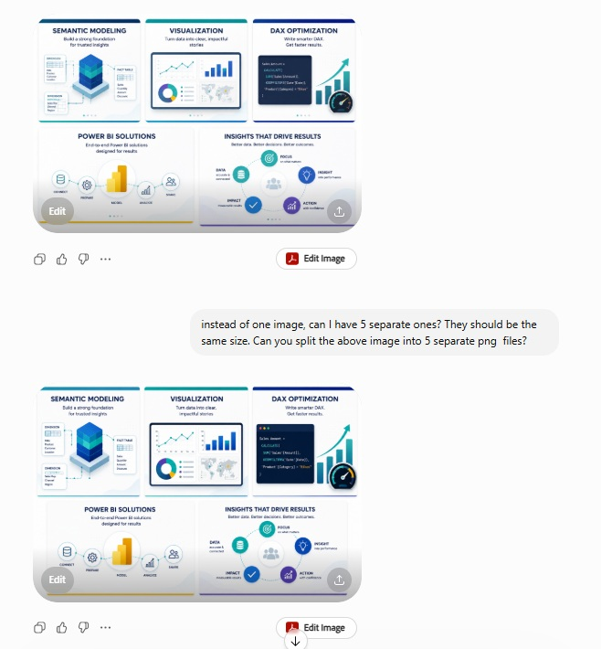
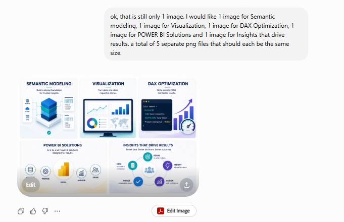
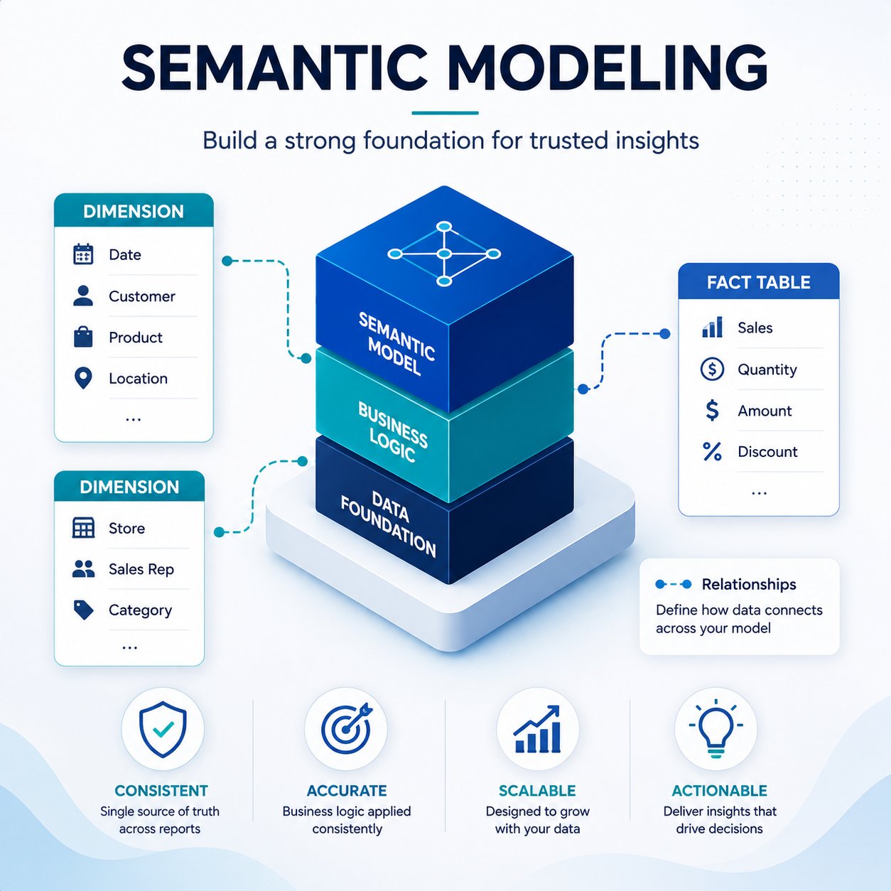

There were 2 more iterations where ChatGPT only produced 1 image file with 5 images, until I prompted for each image separately. Guess I should have specified 5 separate image files, not just separate images. While the Claude images where simple icons, the images from ChatGPT were a little overkill/busy.
